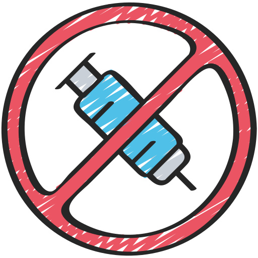

As drogas podem parecer um refúgio temporário, mas escondem um preço alto: a perda de sonhos e a degradação da saúde. Optar por uma vida sem drogas é escolher a força para enfrentar desafios e a clareza para enxergar oportunidades. Cada dia sem drogas é uma vitória, uma chance de construir um futuro brilhante e repleto de realizações. Valorize seu potencial e busque apoio para trilhar um caminho de saúde e sucesso. Lembre-se: o verdadeiro poder está em escolher um futuro melhor e mais saudável. Você é mais forte do que imagina e merece viver a vida ao máximo.
